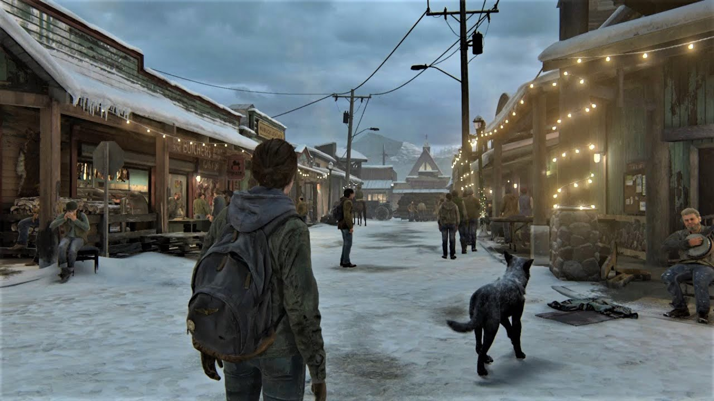
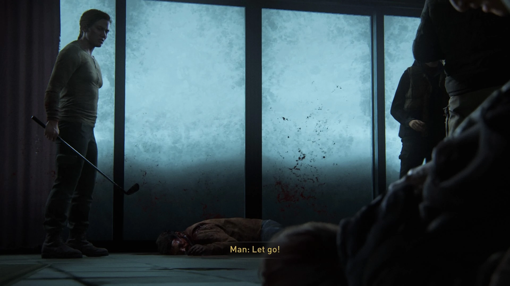
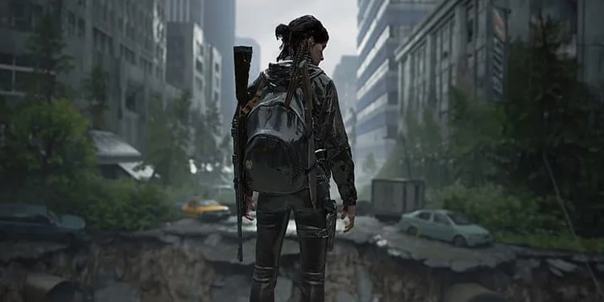
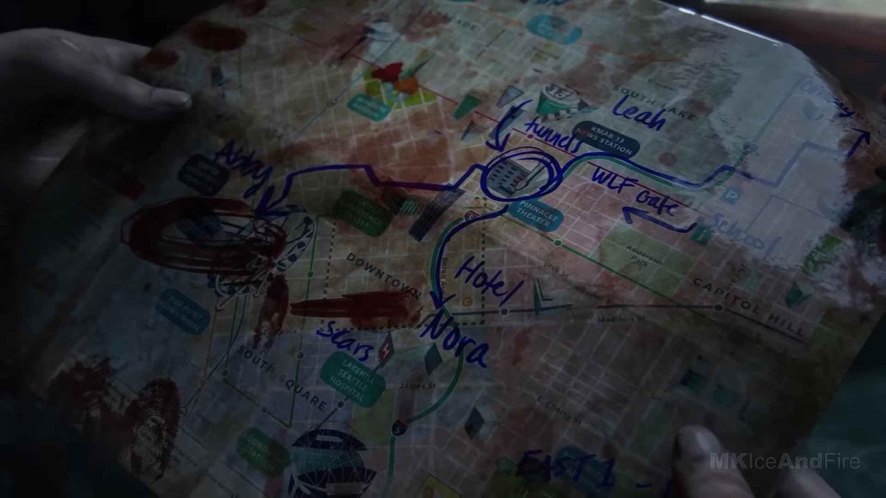
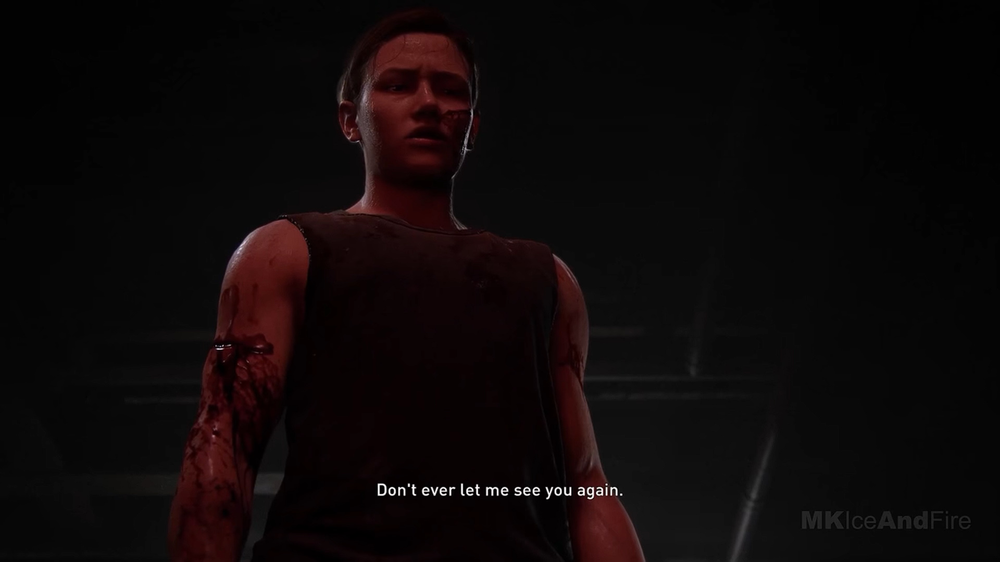
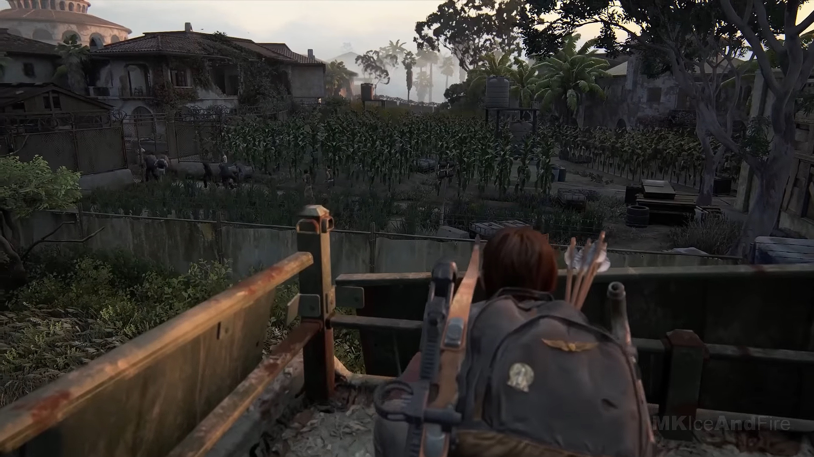
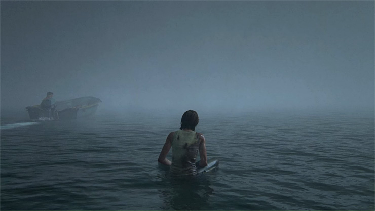
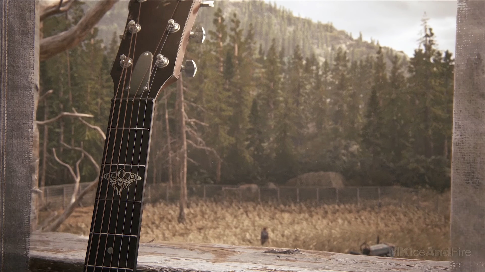

Druhý díl se odehrává o 5 let později v usedlosti Jackson, kterou má pod palcem Joelův bratr Tommy. Ellie je s přáteli jedním z lidí, kteří hlídají město od nepřátel a nakažených.
Mezitím co Ellie se svojí budoucí přítelkyní Dinou projíždí okolí Jacksonu, do města se přibližuje skupina lidí, kteří patří do skupiny WLF pod vedením Abby Anderson, která má ve mestě jediný cíl - pomstít svého otce který byl zabit v nemocnici v Salt Lake City, a zabít jako odplatu Joela.
Joel s Tommym jsou v tuto dobu na hlídce, ale mají problémy s velkým množstvím nakažených. Mezitím, co se snaží odrazit nakažené, naleznou osamocenou Abby, o které vůbec neví, jaký je její plán a jaký je její cíl být zde. Po útěku z hlídacího místa jim Abby nabídne místo, kde mohou přečkat chvíli, jenže naneštěstí pro Joela a Tommyho, je to místo, kde je zbytek Abbyny skupiny WLF, která má stejně jako Abby za cíl zabít Joela za účelem pomsty. Po příjezdu Joela pomalou a bolestivou cestou mučí, když v tu chvíli na místo přijede Ellie, která už skoro beznadějně hledala svého adoptovaného otce. Tu skupina WLF zpacifikuje a je nucena přihlížet mučení a následné smrti Joela, které jí způsobí dožitovní PTSD a chuť ho pomstít. Jenže Ellie neví o tom, že i Abby přijela za pomstou, a vznikne kolo zabíjení.
Poté co skupina WLF odjede, Ellie a její adoptovaný strýc Tommy, kteří oba přežili s velkými zraněními, se rozhodnou, že pomstí smrt Joela a postupně najdou a vydají se na místo, odkud skupina pochází. A tak začne cesta přes celé USA až do města Washington.
Když Ellie dorazí do Seattlu, začne během svojí cesty potkávat lidi, kteří byli ve skupině pod vedením Abby, a postupně začne zabíjet jednoho po druhém. Nad nikým nezná slitování a během 3 dnů, během kterých je Ellie ve městě, zabije všechny její přátele včetně Abbynyho přítele, Owena. Po 3 dnech je ale jak Ellie, tak její přítelkyně Dina, která se vydala jít s ní, vyčerpané a i když jejich hlavní cíl - Abby, nedokázali najít a zabít, tak alespoň pomstily Joela tak, že vyvraždili skoro celou skupinu. Rozhodnou se schovat v divadle a přečkat noc, aby nabraly sílu na cestu zpět do Jacksonu.
Každopádně Abby není slepá a během 3. dne zjistí, že všichni její přátelé jsou mrtví, a mají společný motiv. Když dorazí k místu, kde ona sama se schovávala, najde tam jejího mrtvého přítele. Položí ji to na kolena a rozhodne se, že musí zjistit, kdo toto způsobil a pomstí ho. Když procházela místo jejího úkrytu, našla mapu, která omylem upadla Ellie, a která směřovala přesně k divadlu, kde se Ellie s Dinou nacházeli. Abby se tedy rozdhodne tam jít a zjistit, kdo stojí za těmito vraždami.
Jakmile se dostane do divadla, Abby konfrontuje Ellie, a i přes mnohem lepší vybavenost zbraněmi je Ellie přemožena mnohem silnější a armádou vycvičenou Abby, která sama přemůže jak Dinu, tak Tommyho, tak Ellie. Mohla možnost je zabít, ale věděla, že pomsta ničemu nepomůže a nechala všechny 3 žít pod podmínkou, že nechce nikoho z nich životě vidět.
Dále se ocitáme o určitou dobu více do budoucna, kdy se Ellie s Dinou a nově narozeným synem rozhodnou žít normální život a zapomenout na vše, co se dělo dříve. Ze začátku se zdá být všechno v normálu, ale postupem hraní zjišťujeme, že Ellie má PTSD na smrt Joela, kterou byla nucena vidět, a chutí ho stále pomstít a zabít Abby, i když jí všichni v okolí říkají, aby to nedělala. Jediná vyjímka je Tommy, který stále pobádá Ellie k tomu, aby jí zabila, ale Elliina přítelkyně vyhrožuje tím, že pokud se rozhodne toto udělat, tak od Ellie odejde a nechá jí být. Ellie se jednoho dne rozhodne, že i přes to se rozhodne jít si pro pomstu, i když ví, že díky tomu ztratí vše. Vydá se tedy směrem, kudy podle zdrojů směřovala Abby a její parťák Lev - do Santa Barbary.
Mezitím v Santa Barbaře procházíme s Abby městem, kde hledá skupinu, ke které dříve patřil její otec, jenže ve městě je zajata místní otrokářskou skupinou Rattlers a je převezena na místo, kde bude zotročena.
Když Ellie dorazí do Santa Barbary, je díky zajetí jednoho ze členů otrokářské skupiny zjistit, kde mají sídlo a kde se nachází Abby. Ellie se tam dostane, pozabíjí většinu místího gangu a osvobodí vězně, který ji na oplátku řeknou, kde se nachází Abby. Ta kvůli pokusům o útěk byla pověšena za kůl a nechána na smrt. Když se Ellie dostane na místo, prvně se nad ní slituje, odřízne ji a jejího společníka z kůlu a společně se vydají k lodím, aby utekli. Když se dostanou k lodím, dostane Ellie vzpomínku na to, za jakým cílem tady vlastně je, a rozhodne se, že je to teď nebo jindy a pod výhružkou, že pokud Abby nepůjde bojovat, zabije jejího společníka, jdou do boje. Jelikož Abby je oslabena mučením na kůlu, jí Ellie začne přemáhat a začne ji postupně topit. Ellie ale v jednu chvíli dostane flashback na Joela, jak poklidně hraje na kytaru, který říká že pomsta k ničemu není, a na poslední vteřinu Abby pustí, slituje se nad ní, a psychicky se složí. Došlo jí, že v tuto chvíli ji v životě nezbylo nic - ani Joel, ani Tommy, ani Dina, ani její dítě, prostě nic.
Zdrcená se vrací zpátky na místo, kde dříve měli s Dinou dům, ale zjistí, že je až na její pokoj prázdný a nikdo jiný v něm není. Jediná věc, která jí v tuto chvíli zbyla, tak byla písnička, kterou jí dříve naučil Joel, ale ani tu kvůli chybějícím 2 prstům nemohla zahrát. Příběh druhého dílu pak končí záběrem na Ellie, jak odchází do okolního lesa.
